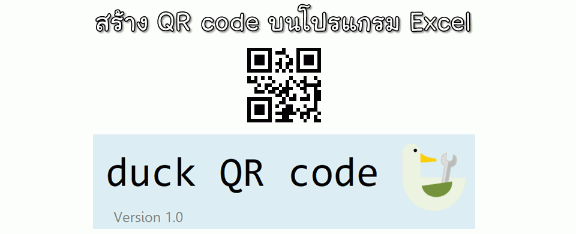

โปรแกรมสร้าง QR code บน Excel

QR code เป็นรหัสจุดแบบ 2D มีหน้าที่ใส่ข้อมูลเพื่อให้ใช้เครื่องอ่าน หรือกล้องมือถือ ถ่ายภาพแล้วดึงข้อมูลออกมาได้ เป็นมาตรฐานสากล สามารถใช้งานได้ฟรี คิดค้นโดยคนญี่ปุ่นชื่อ Masahiro Hara บริษัท Denso Wave เมื่อปี ค.ศ.1994
โปรแกรมสร้าง QR code บน Excel ผู้เขียนไม่ได้เป็นคนเขียนอัลกอลิทึมที่เป็น VBA เอง แต่เอาจากเว็บของคุณ Alois Zingl อีกที ซึ่งเขาแจกให้ใช้งานฟรี ซึ่งในเว็บจะมี 2D Barcode Generator ทั้ง Data Matrix, QR, Aztec และ Code 128 ซึ่งสามารถสร้างโดยการพิมพ์สูตรในเซลล์ของชีทที่ต้องการ โปรแกรมก็จะสร้างภาพรหัสดังกล่าวให้อัตโนมัติ โดยขนาดของรหัสจะอ้างอิงตามขนาดของเซลล์ที่ใส่สูตรอยู่ โดยภาพที่ได้จะเป็นภาพแบบเวกเตอร์คุณภาพสูง พิมพ์ออกมาบนกระดาษได้คมชัด
โปรแกรม duck QR code

ผู้เขียนได้เขียนโปรแกรมช่วยสร้าง QR code ครั้งละจำนวนมาก ๆ พร้อมรองรับป้ายข้อความด้านล่าง โดยสามารถใช้งานได้ฟรี โดยมีคุณสมบัติ
- สามารถสร้างแค่ QR code ชิ้นเดียว แค่ใส่ข้อความ กำหนดขนาดที่ต้องการ แล้วกดปุ่ม ก็จะได้ QR code บนชีท Excel ทันที
- หากต้องการสร้างครั้งละหลาย ๆ ชิ้น สามารถใส่ข้อมูลในไฟล์ Excel แล้วนำมาใช้เป็นข้อมูลสำหรับสร้าง QR code ได้ทันที
- สามารถกำหนดขนาดของ QR code ได้
- สามารถเลือกรูปแบบภาพเป็น เวกเตอร์ หรือ บิตแมพ ได้
- สามารถตั้งค่าหน้ากระดาษได้
การสร้าง QR code แบบชิ้นเดียว
- ให้ใส่ข้อความที่ต้องการในข้อ 1.
- กดปุ่ม สร้าง QR code
การสร้าง QR code พร้อม ๆ กันหลายชิ้น
ให้ผู้ใช้ทำการเตรียมไฟล์ Excel ที่มีข้อมูลรหัส และ ป้ายชื่อ (ถ้าต้องการ) ในชีทแรก (รองรับแค่ชีทแรกชีทเดียว) โดยคอลัมน์แรกจะเป็นรหัสหรือข้อความที่จะใช้สร้าง QR code คอลัมน์ที่สองเป็นป้ายข้อความ
หากต้องการสร้างเป็นตาราง ก็ให้ใส่ข้อมูลต่อ ๆ กันไปตามความต้องการ ตัวอย่างสร้าง 5x2 ชิ้น
เมื่อเตรียมไฟล์เรียบร้อยแล้ว ให้กดปุ่ม เลือกไฟล์ เพื่อเลือกไฟล์ที่จะดึงข้อมูลมาใช้สร้าง QR code จากนั้นกดปุ่ม สร้าง QR code เพื่อทำงาน
ภาพเวกเตอร์ และ บิตแมพ
สำหรับตัวเลือก รูปแบบภาพ ผู้ใช้งานสามารถเลือกได้ 2 แบบ ซึ่งจะมีความแตกต่างกันดังนี้
- เวกเตอร์ (Vector image)
เป็นภาพที่มีความคมชัดสูง ไม่ว่าจะย่อหรือขยาย ภาพที่ได้จะยังคมชัดเสมอ ข้อเสียของภาพแบบนี้คือ ใช้หน่วยความจำเยอะมาก และทำงานแสดงผลบนหน้าจอได้ช้า เมื่อบันทึกไฟล์ที่สร้างจะใช้เนื้อที่เยอะกว่าแบบบิตแมพมาก หากสร้าง QR code หลายชิ้นพร้อมกันจำนวนมาก ๆ อาจทำให้เครื่องค้างได้
- บิตแมพ (Bitmap image)
เป็นภาพที่มีความละเอียดเท่ากับที่จะพิมพ์ หากมีการย่อ หรือขยาย จะทำให้ความคมชัดของภาพไม่เหมือนต้นฉบับ แต่ข้อดีคือ ใช้หน่วยความจำน้อยกว่าเวกเตอร์มาก และทำงานได้เร็ว เมื่อบันทึกไฟล์จะใช้มีขนาดเล็กกว่ามาก เหมาะสำหรับทำ QR code จำนวนมากในชีทเดียว
ดาวน์โหลด
ไฟล์โปรแกรมสร้าง QR code จะเป็นไฟล์ Excel ที่บรรจุโปรแกรมแมโครเอาไว้ ผู้ใช้งานจำเป็นต้องอนุญาติให้ Excel ดำเนินการเข้าถึงแมโครได้ ถึงจะใช้งานได้
- duck_QR_code.xlsm ไฟล์โปรแกรม
- data_example.xlsx ไฟล์ตัวอย่างข้อมูล
- data_example2.xlsx ไฟล์ตัวอย่างข้อมูล
** ปัญหาการใช้งานที่อาจเกิดขึ้นได้
- การสร้าง QR code แบบบิตแมพจำนวนมาก พบว่าในบางครั้ง ภาพที่ออกมามีเส้นขอบของจุดในภาพเป็นสีเทาจาง ๆ แม้ไม่มีผลต่อการอ่านจากเครื่องอ่าน แต่อาการนี้ยังไม่สามารถหาสาเหตุและวิธีการแก้ไขปัญหาได้ เนื่องจากการแปลงภาพบิตแมพอาศัย Paste Special ของ Excel แปลงจากเวกเตอร์เป็นบิตแมพ ซึ่งกระบวนการภายในผู้เขียนไม่สามารถเข้าไปแก้ไขหรือปรับแต่อะไรได้
- ปัญหา Clipboard เกิดความผิดพลาด ปัญหานี้เนื่องจากมีการเข้าถึงและใช้ Clipboard ตามจำนวน QR code หากมีการสร้างเป็นจำนวนมาก ๆ อาจทำให้เกิดปัญหาไม่สามารถเข้าถึง Clipboard ได้
แจ้งปัญหาและติชม
หากท่านใดมีคำแนะนำ ติชม หรือสอบถาม สามารถเข้าไปคอมเม้นได้ที่โพสนี้ครับ